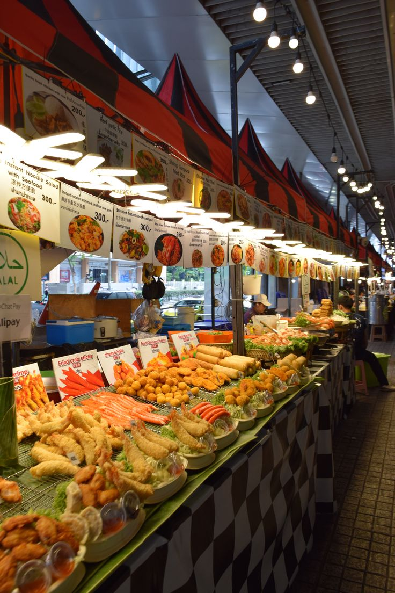

Nikmati Rasa, Kenali Budaya
| Nama Acara: | Festival Kuliner Nusantara 2026 |
|---|---|
| Tema: | Nikmati Rasa, Kenali Budaya |
| Penyelenggara: | Nusantara Food Community |
| Deskripsi: |
Festival Kuliner Nusantara 2026 adalah acara yang menghadirkan berbagai makanan khas dari berbagai daerah di Indonesia. Pengunjung dapat menikmati makanan, minuman, dan berbagai kegiatan menarik seputar kuliner Nusantara.  |
| Informasi Acara: |
|
Ada beberapa kegiatan yang bisa diikuti oleh pengunjung selama Festival Kuliner Nusantara 2026.
Pengunjung dapat mencoba berbagai makanan khas dari beberapa daerah di Indonesia yang tersedia di berbagai stand makanan.
Kegiatan memasak secara langsung yang menampilkan cara membuat makanan khas Nusantara. Pengunjung juga dapat belajar beberapa tips memasak.
Pameran yang memperkenalkan makanan khas dari berbagai daerah serta cerita singkat mengenai asal dan budaya dari makanan tersebut.
| Hari | Waktu | Sesi | Kegiatan | Kategori |
|---|---|---|---|---|
| Jumat | 08.00–09.00 | Pembukaan | Opening Festival | Umum |
| 09.00–11.00 | Food Bazaar | Kuliner Jawa | Umum | |
| 09.00–11.00 | Food Bazaar | Kuliner Sumatera | Umum | |
| 11.00–12.00 | Cooking Demo | Memasak Makanan Nusantara | Umum | |
| 13.00–15.00 | Pameran | Kuliner Tradisional | Umum | |
| Sabtu | 08.00–10.00 | Food Bazaar | Kuliner Jawa Timur | Umum |
| 08.00–10.00 | Food Bazaar | Kuliner Bali | Umum | |
| 10.00–12.00 | Cooking Demo | Membuat Jajanan Tradisional | Umum | |
| 13.00–15.00 | Pameran | Minuman Tradisional | Umum | |
| Minggu | 08.00–10.00 | Food Bazaar | Kuliner Nusantara | Umum |
| 10.00–12.00 | Penutupan | Closing Festival | Umum | |
| Jadwal kegiatan dapat mengalami perubahan sesuai kondisi penyelenggaraan acara. | ||||
Silakan isi data diri di bawah ini untuk mengikuti kegiatan Festival Kuliner Nusantara 2026.